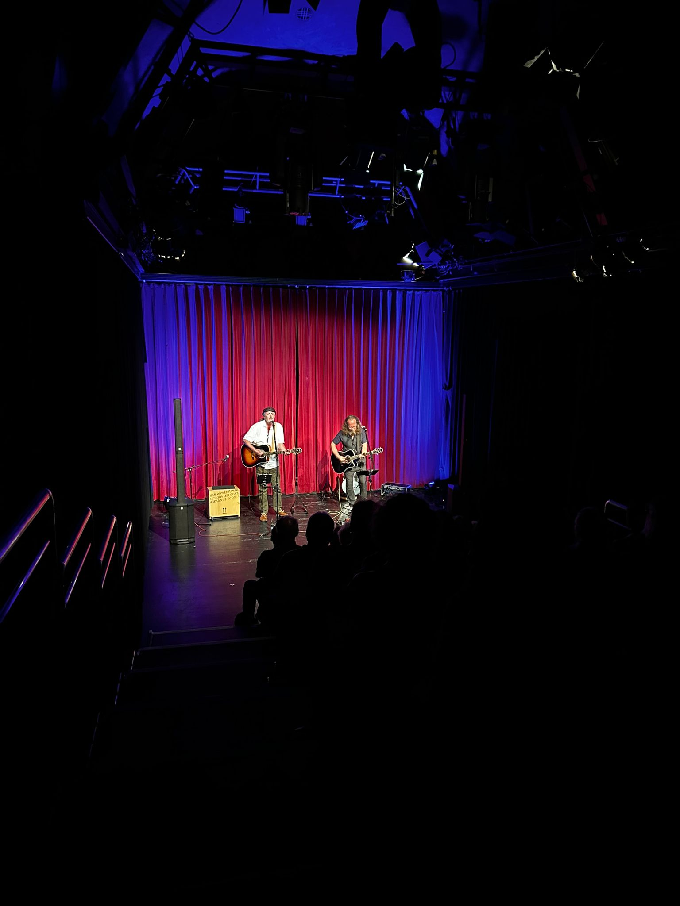
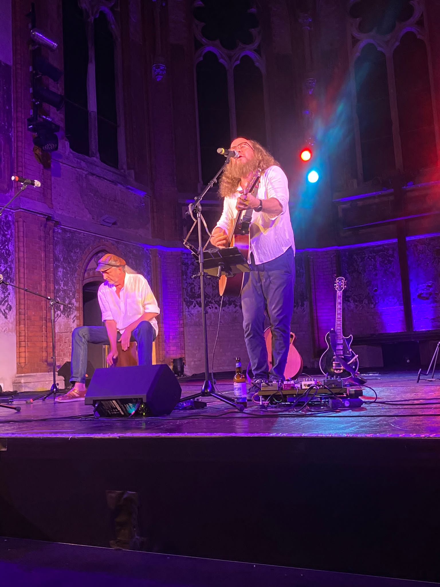

Fotos
Impressionen







Pressematerial, Fotos in Druckqualität und technische Anforderungen auf Anfrage.
Kurz- und Langbiografie des Duos für Programmhefte und Ankündigungen.
Folgt in KürzeHochauflösende Fotos für Print und Online — frei zur redaktionellen Verwendung.
Folgt in KürzeFür spezifische Materialwünsche oder technische Anforderungen einfach schreiben.
Kontakt aufnehmen